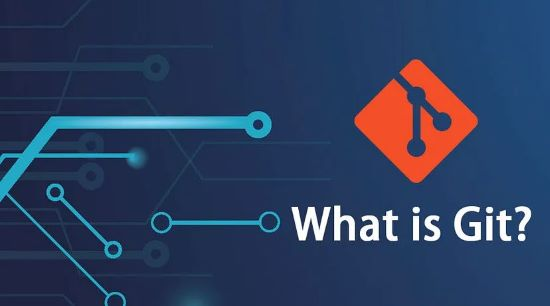
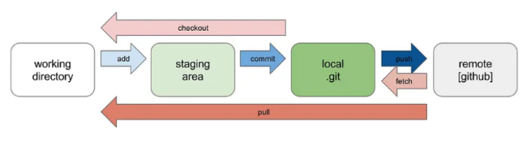
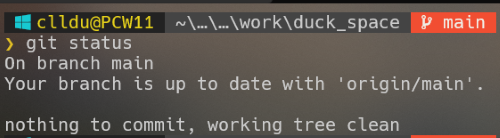

O que é o Git?
Gestão de versões e trabalho distribuído.
Git é um tipo de sistema de gerenciamento de código fonte chamado de sistema de controle de versão distribuída.
É uma ferramenta para facilitar o trabalho de desenvolvimento registrando e acompanhando as mudanças
de versão dos arquivos, comparando o passado aos atuais arquivos e evidenciando as alterações.
O sistema ainda permite que múltiplos desenvolvedores editem os arquivos de onde estejam.
O que significa usar o 'Git'
Primeiro, faça uma cópia do arquivo ou de outros arquivos em um local de armazenamento que possa
ser compartilhado por todos (referido como "repositório remoto") no seu computador (referido
como "repositório local"), e depois adicione ou edite novo código ou arquivos.
Em seguida, os arquivos serão atualizados ao registrá-los do repositório local para o repositório remoto.

A imagem acima representa o fluxo de trabalho sob a ótica do Git. Primeiramente seu diretório de trabalho
não está "assistido" pelo Git, é simplesmente um diretório que contem seus arquivos de desenvolvimento, ou como se costuma falar, 'unstaged files'.
Ao inicializar o Git em seu "repositório local" este aguardará pelos comandos do Git que são nesta ordem, 'add', seus arquivos ficarão sujeitos a um agrupamento,
em uma 'área' denominada 'Staging area' de onde eles serão 'comitados', ou seja, este conjunto de arquivos serão os primeiros a serem
'carimbados' como uma primeira versão de seu desenvolvimento.Assim se dará início ao processo de registro de arquivos sob os 'olhos' do Git.
É importante salientar até aqui que este processo até então descrito está acontecendo localmente em seu computador.
Para que este conjunto de arquivos sejam armazenados e/ou trabalhados por um ou mais desenvolvedores voce deverá emitir o comando denominado 'push'
para um repositório remoto (GitHub, GitLab).
Git clone e Git pull
O 'Git clone' se caracteriza por ser o início de algo novo que se pretende trabalhar. Dá-se início a criação de um
repositório remoto e a partir dele faz-se um 'clone'em seu repositório local.
O 'Git pull' é realizado quando se quer atualizar os arquivos do repositório local buscando o que há de novo feito por outros
desenvolvedores e que estejam no repositório remoto.

A imagem acima se refere ao comando do Git, "git status".Este comando lhe permite verificar como estão seus respectivos
repositório, local e remoto no que tange a situação dos seus arquivos. A tela mostra com clareza que nada há sem rastreio, ou seja "untracked",
nada na área de "staging" e nada para ser "comitado". Desta forma o ramo principal, "branch main"
está sincronizado com o repositório remoto. E finalmente seu diretório esta livre de pendências, as citadas anterirmente.